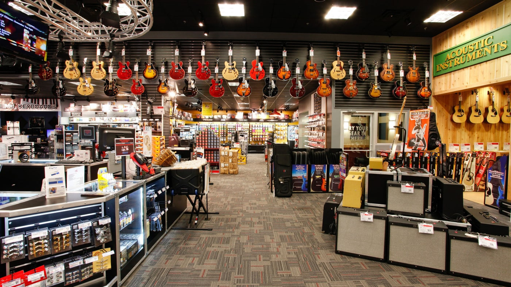

¿Quienes somos?
 ¡Bienvenido a Diginstruments, tu tienda en línea especializada en instrumentos musicales! Explora nuestra amplia selección de instrumentos de alta calidad para músicos de todos los niveles. Nuestro catálogo incluye guitarras, pianos, baterías, violines y más. Contamos con descripciones detalladas y especificaciones técnicas. Nuestro equipo de expertos está listo para ayudarte. Descubre y adquiere el instrumento perfecto en Diginstruments, tu tienda de instrumentos musicales en línea. ¡Que la música siga sonando!